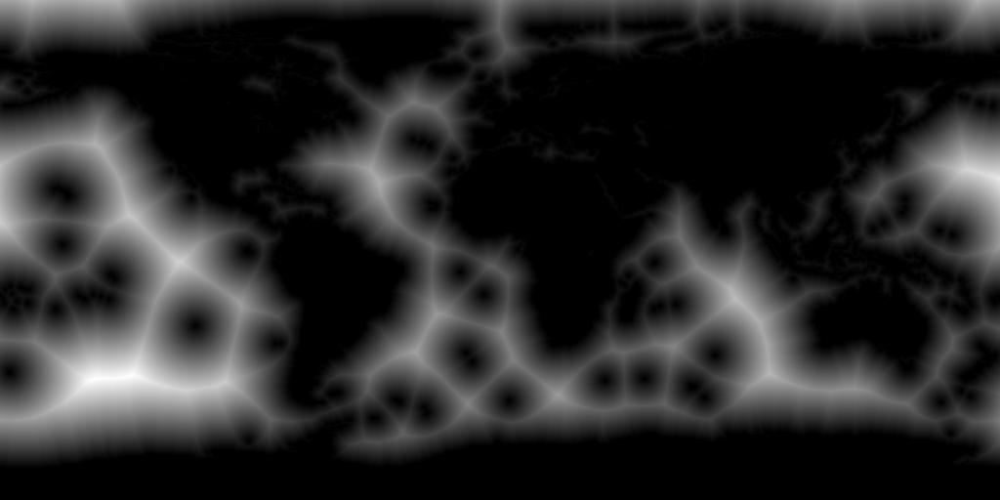

<html>
<head>
    <title></title>
    <script src="./bower_components/threejs/build/three.js"></script>
    <script src="./bower_components/stats.js/build/stats.min.js"></script>
    <script src="./coastline.js"></script>
    <script id="texturedVert" type="x-shader/x-vertex">
        varying vec2 vUv;

        void main() {
            vUv = uv;

            gl_Position =   projectionMatrix *
                            modelViewMatrix *
                            vec4(position,1.0);
        }
    </script>
    <script id="texturedFrag" type="x-shader/x-fragment">
        uniform sampler2D texture1;
        uniform float cutoff;
        varying vec2 vUv;
        float trace = 0.005;
        float land_trace = 0.1;

        void main() {
            vec4 sample = texture2D(texture1, vUv);
            if (sample.r > cutoff + trace) {
                sample.rgb = vec3(0.3, 0.6, 1.0);
            } else if (sample.r > cutoff - trace) {
                sample.rgb = vec3(0.0);
            } else {
                sample.rgb = vec3(0.8, 0.5, 0.1) - (vec3(1.0) * clamp(sample.r, cutoff - trace - land_trace, cutoff - trace) - vec3(cutoff));
            }
            gl_FragColor = sample;
            //gl_FragColor = vec4(0.5, 0.2, 1.0, 1.0);
        }
    </script>
    <script type="x-shader/x-vertex" id="vert">
        uniform float time;

        // switch on high precision floats
        #ifdef GL_ES
        precision highp float;
        #endif

        #define DEG2RAD 2.0*3.14159/360.0;

        vec3 degToRad(vec3 p) {
            return p * DEG2RAD;
        }

        vec3 sphereToCartesian(vec3 p) {
            return vec3(sin(p.x) * cos(p.y),
                        sin(p.y),
                        cos(p.x) * cos(p.y));
        }

        void main()
        {
            vec3 q = degToRad(position);
            q.x += time;
            vec3 p = sphereToCartesian(q);
            // p.x += 2.0;
            p *= 50.0;
            gl_Position = projectionMatrix * modelViewMatrix * vec4(p,1.0);
        }

    </script>
    <script type="x-shader/x-fragment" id="frag">
        uniform float time;
        #ifdef GL_ES
        precision highp float;
        #endif

        void main()
        {
            gl_FragColor = vec4(1.0,1.0,1.0,1.0);
        }

    </script>
</head>
<body>
<!--  -->
<div id="container"></div>
</body>
<script src="./main.js"></script>
</html>